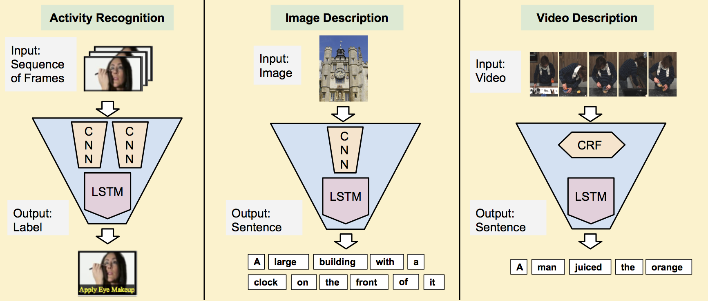

This is the project page for Long-term Recurrent Convolutional Networks (LRCN), a class of models that unifies the state of the art in visual and sequence learning. See our arXiv report for details on our approach.
Code
We have created a Pull Request to the official BVLC Caffe repository which adds support for RNNs and LSTMs, and provides an example of training an LRCN model for image captioning in the COCO dataset. To use the code before it is merged into the official Caffe repository, you can check out therecurrent branch of Jeff Donahue's Caffe fork at git@github.com:jeffdonahue/caffe.git.
Please find instructions for replicating activity recognition experiments at Activity Recognition.
We will update this page as the code is officially released and code for the video description becomes available.
Example Results
Video description (multiple sentences)Contributors
- Jeff Donahue (UC Berkeley)
- Lisa Anne Hendricks (UC Berkeley)
- Sergio Guadarrama (UC Berkeley)
- Marcus Rohrbach (UC Berkeley)
- Subhashini Venugopalan (UT Austin)
- Kate Saenko (UMass Lowell)
- Trevor Darrell (UC Berkeley)
@inproceedings{lrcn2014,
Author = {Jeff Donahue and Lisa Anne Hendricks and Sergio Guadarrama
and Marcus Rohrbach and Subhashini Venugopalan and Kate Saenko
and Trevor Darrell},
Title = {Long-term Recurrent Convolutional Networks
for Visual Recognition and Description},
Year = {2014},
Journal = {arXiv preprint arXiv:1411.4389}
}